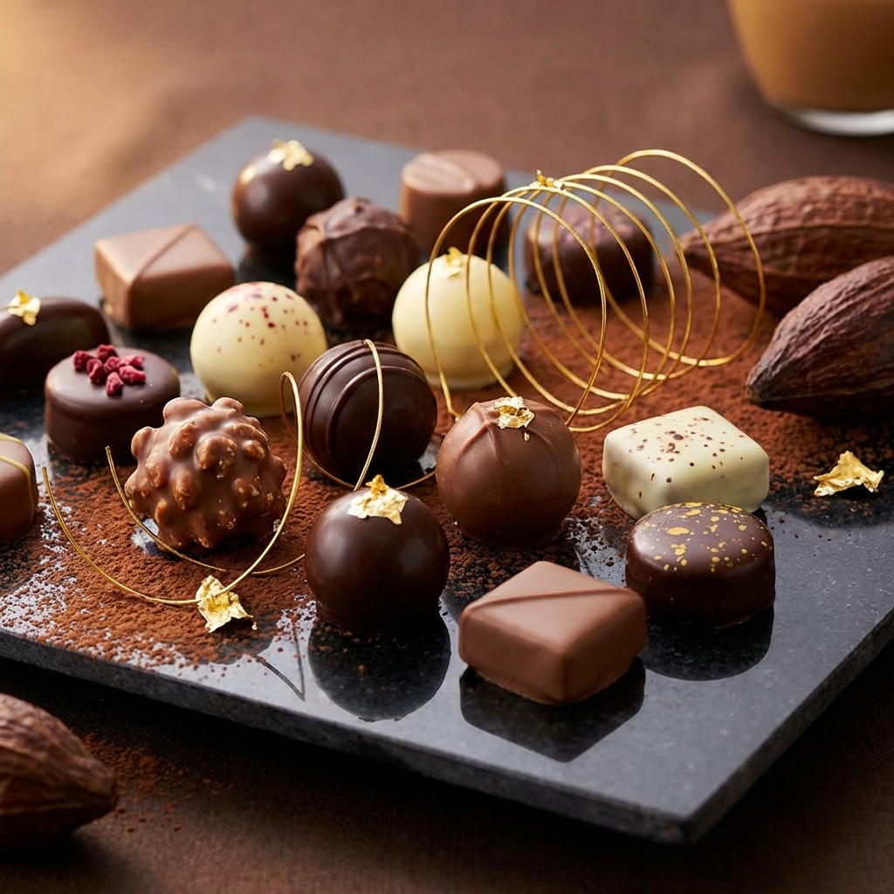
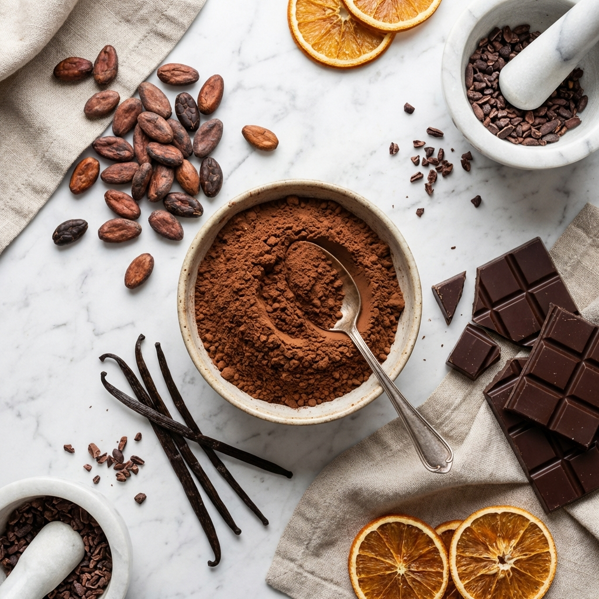

Pernahkah Anda bertanya-tanya mengapa cokelat berkualitas tinggi memiliki bunyi "snap" yang renyah saat dipatahkan, namun langsung lumer begitu lembut saat menyentuh lidah? Jawabannya bukan hanya pada bahan baku, melainkan pada sebuah proses sains yang presisi bernama Tempering.
Di RJ's Confectionery, kami tidak menggunakan jalan pintas. Setiap batch cokelat melalui proses tempering manual yang ketat. Artikel ini akan mengajak Anda menyelami dapur produksi kami untuk memahami mengapa langkah ini krusial.
Apa Itu Tempering Cokelat?
Secara sederhana, tempering adalah proses memanaskan dan mendinginkan cokelat pada suhu tertentu untuk menstabilkan kristal lemak kakao (cocoa butter). Lemak kakao memiliki sifat polimorfik, artinya bisa mengkristal dalam 6 bentuk berbeda (Form I hingga Form VI).
Hanya kristal Form V (Beta) yang kita inginkan. Kristal ini memberikan tampilan mengkilap (glossy), tekstur yang kokoh, dan titik leleh yang tepat di suhu tubuh manusia (sekitar 34-36°C).
Dampak Jika Cokelat Tidak Ditempering
Jika cokelat dilelehkan lalu dibiarkan mengeras begitu saja tanpa kontrol suhu, hasilnya akan mengecewakan:
- Blooming: Muncul bercak putih seperti jamur di permukaan (fat bloom).
- Tekstur Berpasir: Cokelat terasa kasar di lidah.
- Lembek: Cokelat mudah meleleh di jari sebelum sampai ke mulut.
3 Metode Tempering yang Kami Gunakan
Para chocolatier kami menggunakan kombinasi teknik tradisional dan modern untuk memastikan konsistensi.
1. Metode Tabling (Meja Marmer)
Ini adalah metode paling klasik dan artistik. Dua pertiga cokelat cair dituang ke atas meja marmer dingin, lalu diaduk terus-menerus menggunakan scraper dan spatula.
"Meja marmer menyerap panas dengan cepat. Gerakan tangan chocolatier saat mengaduk adalah kunci untuk mendistribusikan kristal lemak secara merata."

Teknik melipat cokelat.

Bahan baku berkualitas.
2. Metode Seeding
Metode ini melibatkan penambahan potongan cokelat yang sudah ditempering (padat) ke dalam cokelat panas. Potongan padat ini bertindak sebagai "benih" (seed) yang menularkan struktur kristal yang baik ke seluruh adonan.
Tantangan Iklim Tropis
Indonesia memiliki suhu dan kelembapan tinggi, yang sebenarnya adalah musuh alami cokelat. Di dapur RJ's, kami menjaga suhu ruangan stabil di angka 18-20°C dengan kelembapan di bawah 50%.
Tanpa kontrol lingkungan ini, proses tempering akan gagal karena kelembapan dapat membuat cokelat menjadi kental (seize) dan gula di dalamnya menarik air.
Kesimpulan
Tempering bukan sekadar langkah teknis, melainkan jantung dari pembuatan cokelat artisan. Inilah yang membedakan cokelat premium dengan cokelat compound biasa. Dedikasi pada proses yang rumit ini kami lakukan demi satu tujuan: senyuman Anda saat cokelat RJ's lumer sempurna di mulut.
Kami harap artikel ini memberikan wawasan baru bagi Anda para pecinta cokelat. Kualitas sejati membutuhkan kesabaran dan ilmu pengetahuan.